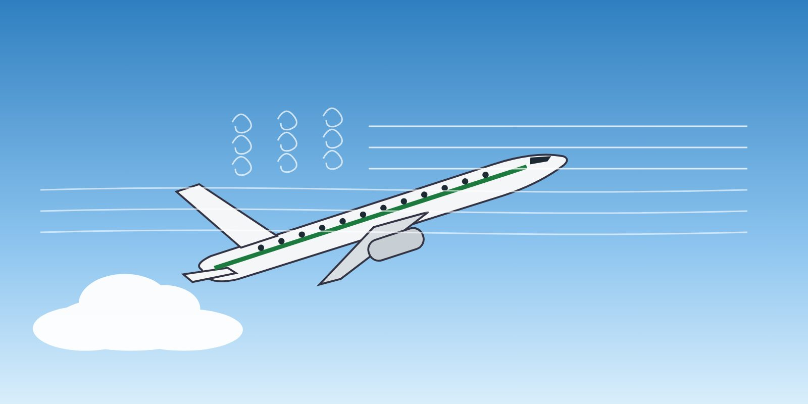

Both require the same immediate action: reduce the angle of attack.
| Factor | Effect on stall speed |
|---|---|
| Higher weight | Increases (stall speed is proportional to √weight) |
| Higher load factor (turns, pull-ups) | Increases with √n — about 41 % higher at 2 g (Lesson 6) |
| Flaps and slats extended | Decreases (higher CLmax) |
| Ice or contamination | Increases, and the critical angle of attack decreases |
| Forward centre of gravity | Increases slightly (more tail down-force needed) |
| Higher altitude | Indicated stall speed changes little at low altitude, but Mach effects raise it at high altitude (Lesson 7) |
Pulling back to "hold altitude" when the stall warning activates increases the angle of attack — the opposite of what is needed. Altitude loss is secondary; reducing the angle of attack is the priority.
The stick shaker activates during a level-off. What is the first priority?
Answer: B. The stall warning indicates a high angle of attack. Reducing the angle of attack is the first priority, even at the cost of altitude.
Training material only. It does not replace the Aircraft Flight Manual, FCOM, QRH, MEL or the Domestic Airlines Operations Manual, which always take precedence.